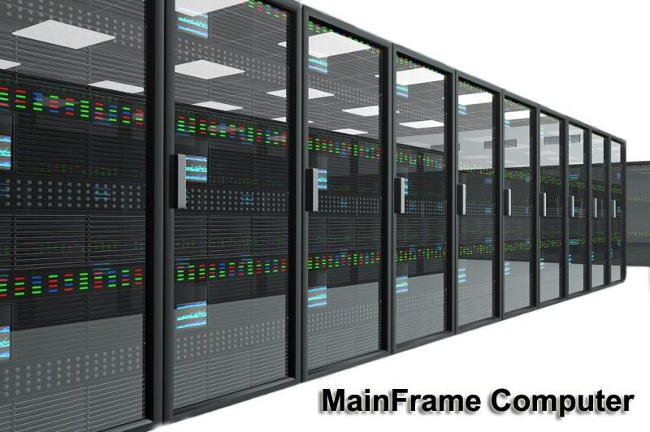
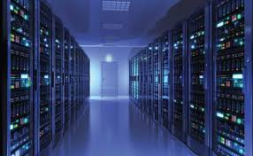

THIS IS THE SITE THAT CONTAINS SOME INFORMATION ABOUT COMPUTER
Types Of Computer: There are different types of computers but some of them are given below. Microcomputers (personal computers) Minicomputers (mid-range computers) Mainframe computers Supercomputers
1) Microcomputers (personal computers): A microcomputer is a complete computer on a small scale, designed for use by one person at a time. An antiquated term, a microcomputer is now primarily called a personal computer (PC), or a device based on a single-chip microprocessor. Common microcomputers include laptops and desktops. Beyond standard PCs, microcomputers also include some calculators, mobile phones, notebooks, workstations and embedded systems. If you want know more about microcomputer Click Here
2) Mini Comouters: Minicomputer, Computer that is smaller, less expensive, and less powerful than a mainframe or supercomputer,but more expensive and more powerful than a personal computer. Minicomputers are used for scientific and engineering computations, business-transaction processing, file handling, and database management, and are often now referred to as small or midsize servers. If you want to know more about mini Coomputer click here If you want to know more about the mainframe computer Click Here
3) Mainframe computers:  Mainframes are a type of computer that generally are known for their large size, amount of storage, processing power and high level of reliability. They are primarily used by large organizations for mission-critical applications requiring high volumes of data processing. In general, there are a few characteristics of mainframes that are common among all mainframe vendors: Nearly all mainframes have the ability to run (or host) multiple operating systems. Mainframes can add or hot swap system capacity without disruption. Mainframes are designed to handle very high volume input and output (I/O) and emphasize throughput computing. A single mainframe can replace dozens or even hundreds of smaller servers. If you want to know more about the mainframe computer Click Here
 4) Super Computer A supercomputer is a computer that performs at or near the currently highest operational rate for computers. Traditionally, supercomputers have been used for scientific and engineering applications that must handle very large databases or do a great amount of computation (or both) If you want know to know more about super computer Click Here